Pro-Active Wellness
Introducing our wellness solution that incentivizes healthy behavior through cash rewards! We know that keeping elderly patients healthy can be challenging, so we're here to motivate them with cash rewards for making positive choices.
Request a Demo
Why check in early
Many problems older patients face go unmentioned until they turn serious.
-
More than one in four adults 65 and older falls each year, and less than half tell their doctor.
-
15% of adults 70 and older live with a mental disorder, most often anxiety or depression, and these often go unrecognized and untreated.
-
8% of U.S. adults 35 and older were up to date on all the high-priority preventive care recommended for them.
How it works
-
A text or email arrives
Patients get a link on their phone, tablet or computer. There's no app to download.
-
A few big, simple questions
A short check-in, like a fall-risk screen or the PHQ-9 for depression, asks one question at a time with large buttons, then plays a short video.
-
A reward, and a heads-up for the clinic
Finishing earns a reward such as a gift card, and the clinic's dashboard shows who needs follow-up.
IHT Wellness Wallet Your check-in is ready. Answer a few questions to earn a $10 gift card.
Have you fallen in the past year?
Do you have a problem with your balance?
Thank you!
Your gift card is on its way.

Not Just Rewards
Our program goes beyond just rewarding you for good behavior - we also help you identify potential health problems before they become actual problems. With our proactive approach, we aim to keep you healthy and prevent costly medical bills down the line.
What makes it work
- Deterministic Response Methodology
- Each question is designed to elicit a specific response so health providers can make the appropriate decision on the right course of care.
- User-Friendly Interface
- Patients are alerted via email or text and can easily respond to questions using their internet connected mobile phone, tablet, or PC. No downloading of an App is needed.
- Screenings Tool Based on CAHPS®
- Assess and benchmark your patients’ experiences with each practice over a 12-month period, gathering their feedback on quality of provider care and be alerted to potential health issues.
- Game Theory Rewards System
- A simple game theory reward system is in place that incentivizes participation and creates a consistent positive continued response from patients.
Rewards get people to show up
In randomized trials, people offered a financial reward were nearly twice as likely to come in for a vaccination or screening as people who weren't.
Giles and others, a review of 16 trials in PLOS ONE, 2014

Request a Demo
Email info@iht.tools to request a demo.